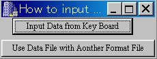
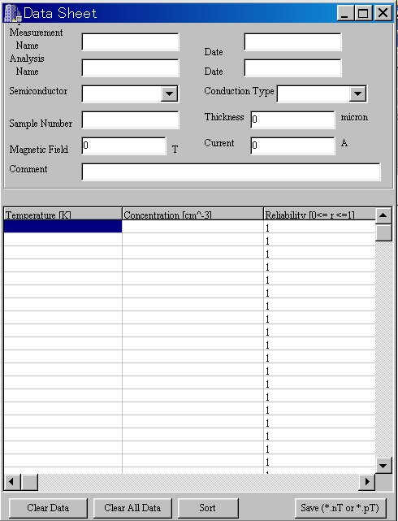
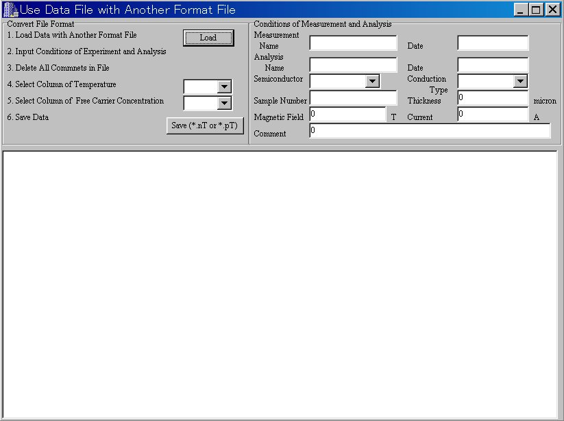
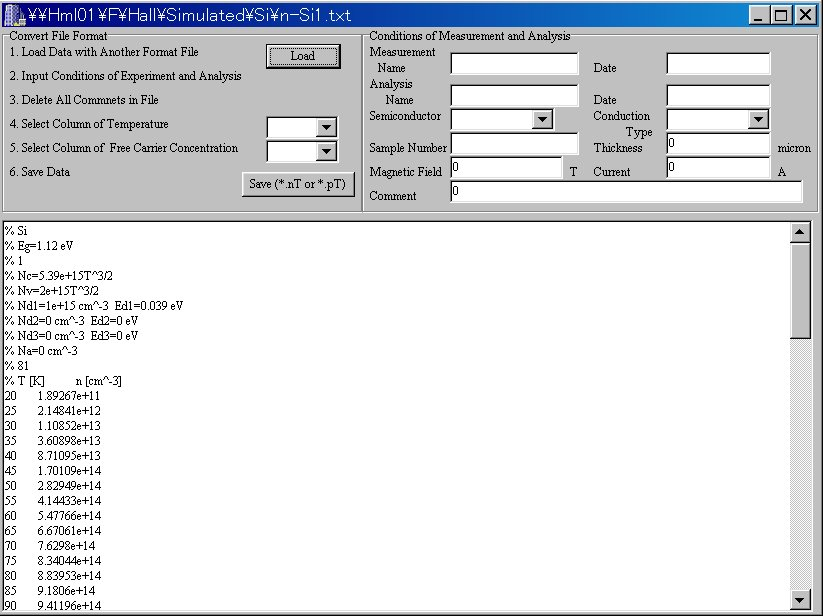
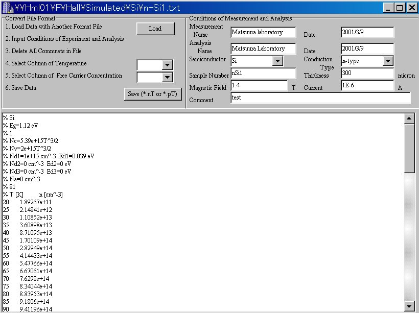
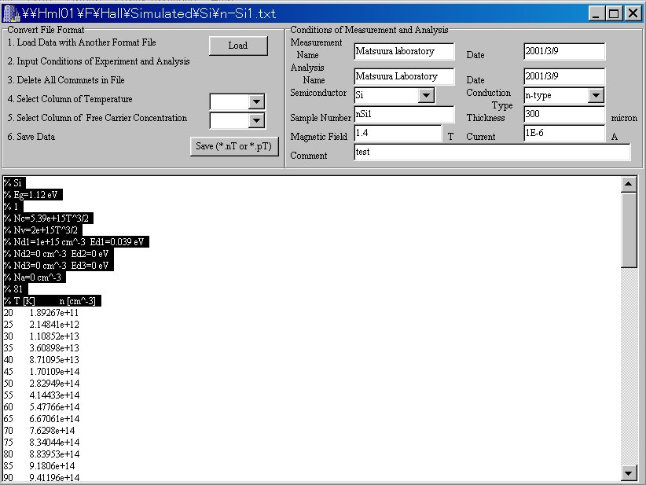
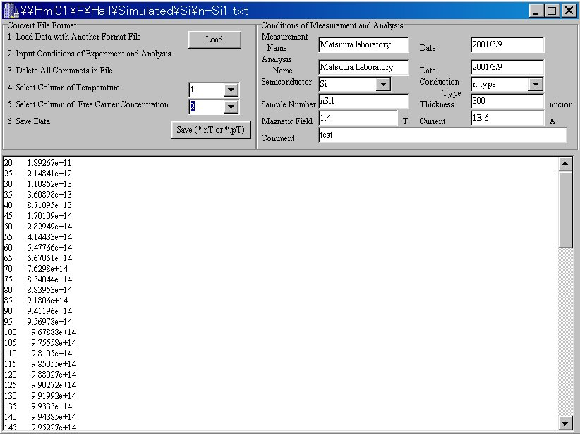

How to use the application
1. Input experimental data
-
Please click the "Input Data" button.

-
Input the data using key board
Please the "Input Data from Key
Board"
button.

-
Input the data from a data file with another
format file
1. Please the "Use Data File with
Another
Format File" button.

2. Click the "Load" button
and
select the file that you want to load.

3. Input the information.

4. Delete all comments.

5. Select columns.

6. Click the "Save" button.